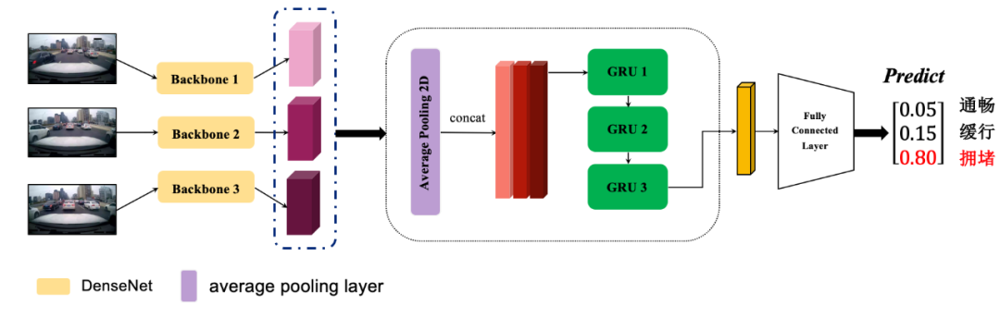

冠军方案之 高德算法大赛
freeopen 2021-02-10 [机器学习] #top1冠军：北邮在读博士 朱奕达及团队
比赛任务
初赛数据：
输入：给定一组含有GPS时间的图像序列（包含3-5帧图像），其中一幅图像作为参考帧。
输出：以参考帧为准，输出该图像序列对应的路况状态（畅通、缓行和拥堵）。
图像序列由行车记录仪拍摄，路况真值（ground truth）是对应道路当前时刻真实的路况状态。
数据信息：
- 图像序列的参考帧图像名。
- 图像序列的路况状态。
- 0：畅通，1：缓行，2：拥堵，-1：测试集真值未给出。
- 每帧图像采集时刻的GPS时间。
- 单位为秒。如GPS时间 1552806926 比 1552806921 滞后5秒钟。
- A榜测试数据集换成高速行车记录仪采集的数据，GPS时间间隔缩短为1-2秒。
复赛数据：
- 新增
封闭的道路路况 - 移除了GPS时间信息
数据分析
- 前车遮挡视野内道路情况，从而影响对道路的判断；
- 对向车道和路边停靠车辆对行驶车道路况判断的影响；
- 数据众包导致相机安装存在角度偏差，从而导致图像角度不一致；
- 大雾天气和夜晚导致的图像不清晰。
复赛阶段数据集：
- 存在重复采样的图像序列（多为封闭类型的路况）
- 数据不均衡，缓行只有100多个序列，而封闭路段有2000多个序列
特征工程
分车道目标检测
目标检测采用 Faster RCNN 模型，将道路车辆分成5个类别进行标注，分别是：当前车辆前方行驶车道车辆，同向行驶车道左侧车辆，同向行驶车道右侧车辆，对向车道行驶车辆，街边侧向停车车辆。通过这样的标注对当前道路环境的车辆进行细致区分，后续将通过目标检测结果提取不同车道的车辆信息特征。
特征提取
基于目标检测的结果，提取60维特征，包括：
- GPS时间特征
- 关键帧中不同车道的车辆数量、面积、距离等
- 不同帧间检测框的动态特征，如车辆相似度、数目和面积变化等
- Focal loss 降低样本不平衡
其中：
- 距离通过检测框的中心点，计算两点间的直线距离
- 不同分车道设计了两个权重，一为box数量与时间间隔的关系，数量增加分数降低，数量减少分数增加；二为box大小与时间间隔的关系，大小增加分数降低，大小减少分数增加。
基于车辆相关特征训练 LGB 模型，B榜分数为0.6108。
数据扩充与增强
复赛阶段，针对类别数量的差异性，对缓行和拥堵类别做了数据扩充。对同一个序列中的图片，对每一帧图像都做了相同的数据变化，保证序列图片所处的相对环境是一致的。具体方法有：
- 模型输入按照采样顺序选择3张图片；
- 针对相机安装存在角度偏差的问题，使用了平移，尺度加旋转变换的数据增强方法；
- 考虑到视频在采集时包含了一天中的不同时间节点，光照强度和天气条件也对图片造成了较大的影响， 加入了对比度，亮度和颜色增强的方法尽可能贴合实际数据。
- 从赛方给的数据中我们发现图片的清晰度和质量在不同序列之间存在差异，为此引入了运动模糊，中值滤波，高斯滤波，高斯模糊等方法进行数据增强。
- 此外图像中还存在一些脱敏信息，比如马赛克或者黑色条，我们也引入了一些cutof操作，减少模型对图像特定部分的依赖。
模型增强
考虑到道路情况不止和车辆信息有关，还和道路及场景相关，基于分车道目标检测模型只对图像中的车道信息进行提取，而忽略了图片中的其他场景细节。并且目标检测模型本身存在一些误差，将目标检测结果特征再训练一个 LGB 模型可能会对误差进行传递。
端到端模型方案：即训练一个考虑图片全局信息的序列检测模型。
图片输入窗口大小是3，采用基于DenseNet121先对每张图片提取全局特征后，将图片特征按照时间顺序输入到GRU模型中得到最后的分类结果，在初赛中B榜上我们并没有使用数据增强的方法，最后取得了第一名的成绩0.6614。
时空特征提取
在复赛中，赛题发生了变化，新增了封闭这个类别后，基于特征的方案中需要根据障碍物标注进一步提高目标检测模型的鲁棒性，而实际障碍物标注数据质量并不高，尝试建模后发现效果并不如意。
为了减少误差的传递并考虑图片中更多的信息，基于端到端序列检测模型，提取了不同frame的特征后，再使用特征融合模块挖掘图片序列之间的时序特征关系。
特征融合模块中仍然使用双向GRU模型挖掘时间序列特征。将backbone替换成resnest101和SE_ResNext，在空间特征挖掘中，使用了位置注意力模块和通道注意力模块的双注意力网络。通道注意力模块校准序列图片中的特征图通道之间的关系，位置注意力模块对特征图中不同position进行关系强度的计算，从而挖掘序列图片中的局部关系变化和全局关系变化。
数据增强和样本扩充后，进行5折交叉验证的训练，选择了 5 个模型进行基于概率的融合，最后在B榜上得到了第二名的成绩0.7237，比第一名低了万分之9个点。
模型落地及展望
在实际场景下，不仅仅有图片序列信息，还有道路等级数据，GPS时间，POI点等信息，可以将这些路网和时间信息通过 embedding 等方式处理成相应的特征融合到我们的模型中，更丰富的感知源丰富了我们的时空信息特征空间。
除此之外，还可以不断优化障碍物和车辆目标检测模型识别精度，从而制定更多的约束规则进行前处理和后处理的规则约束。
在模型落地时，可以通过模型蒸馏、优化加速等方式将模型下放到边缘节点进行分布式计算。交通路况状态在局部区域是互相影响的，所以我们还可以根据路网信息对城市进行栅格化处理，将众包得到的数据分栅格进行管理，这样我们可以得到该路段信息的临近路况辅助修正模型结果。